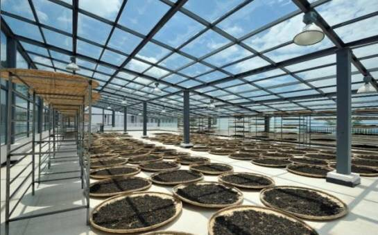

交易中心
交易中心
 交易指南
交易指南
 普洱档案
普洱档案
 普洱资讯
普洱资讯
 下载中心
下载中心
 活动频道
活动频道

祥源茶业——创造价值健康生活
2016-05-06 11:28 来源：蒙顶山普洱
好平台能带动一个产业的发展
好品牌能成为一个行业的符号
强强联手方能开辟另一片天地
茶，是一门学问。选株、采摘、杀青、揉捻、发醇、干燥，每一步都蕴含着万千的变化，同一片土地上的茶，可以调制出千变万化的香。在蒙顶山普洱平台上线的祥源茶业产品就出自勐腊县易武乡这片土地上，以属于自己的品牌，飘出一缕不一样的茶香。
新兴实力奇迹崛起
祥源茶业股份有限公司成立于2012年2月，是一家高品质茶业产品及相关服务的专业化供应商，运营总部位于安徽省合肥市，旗下拥有祥源易武等分公司，以生产、运营‘祥源茶“系列为核心产品。当前覆盖茶叶品类包括：普洱茶系列、祁门红茶系列、白茶系列。祥源茶业以“正宗原产地，核心小产区”为产品定位策略，上市短短3年，通过全国性行销网络布局与优势品牌塑造，已在国内重点市场拥有40家城市级渠道合作商、近100家品牌授权专营店，产品深受广大茶叶消费者喜爱，成为行业新兴推动力量的代表。

祥源易武茶厂飘香
祥源易武公司，全称西双版纳祥源易武茶业有限公司，是祥源茶业股份有限公司旗下成员企业，成立于２０１３年９月，位于云南普洱茶源头地区、驰名中外的普洱茶六大古茶山核心所在地——西双版纳州勐腊县易武乡。
２０１４年５月，祥源易武茶厂正式落成，总投资４５００万元，总建筑面积１００００平方米，是易武茶区目前最大的现代化、专业化精品普洱茶生产加工中心，也是易武茶业产业化发展的标志性平台。祥源易武茶厂拥有先进的设备，制作工艺传承古法，并完美融合现代先进技术。目前，茶厂具备年５００吨的精品普洱茶生产能力，年产值约２亿元。

易武茶师实力茶园
祥源易武公司拥有资深茶行业专家及多名制茶经验丰富的制茶师。王汉文先生是祥源普洱茶首席拼配专家，现任祥源易武副总经理，１９９０年毕业于安徽农业大学茶业系机械制茶专业，一直在茶叶生产一线工作，在云南茶区工作时间超过二十年，早在上个世纪９０年代，就来到易武寻找好茶，为寻找最优质的普洱茶原料穿行在大山茂林之中，对云南茶叶生产加工各环节都极为精通，熟知各产区茶性。

经过茶师多方勘定，选定的易武茶山面积750公里，紧靠中老边境，为古六大茶山中最大的茶山，包括易武正山、漫撒茶山、曼腊茶山在内。以易武为核心的古六大茶山区域是世界所公认的普洱茶发源地。从清代中期的贡茶，到清代末期作为古六大茶山的产制加工与交易中心，以及流传至今的号级、印级等传世名品，其作为顶级优质普洱小产区，已为业界公认。

围绕祥源茶“小产区”的发展运营思路，祥源易武公司依托易武作为普洱茶顶级小产区的优质原料资源及古六大茶山区域优秀制茶传统，致力于深入发掘、提升易武产区茶叶价值，构建可持续发展的小产区产业链生态系统，从根本上服务于易武茶业的发展与升级。
目前，公司在易武乡拥有茶园基地5000余亩，其中4000亩为取得经营管护权的古茶园基地，1000多亩合作茶园， 主要分布在一扇磨、旧衙门、刮风寨、落水洞等地。
斗茶品茶茶乡飘香
为促进各大普洱茶相互交流，各展所长，祥源茶业于２０１３年与西双版纳州勐腊县人民政府签署协议书，启动易武茶和茶文化旅游项目建设。同时，就携手打造推广易武乡传统茶事活动“易武斗茶会”达成长期战略合作协议。
祥源·易武斗茶会活动自创办以来，已成功举办三次，成为业界瞩目的重要茶事活动和推介易武茶、体验易武茶的影响力平台，活动得到易武茶区七村八寨及古六大茶山茶农广泛参与，并形成一定的特色及知名度。

坚持宗旨展望未来
祥源茶业将秉持“价值、诚信、合作、共赢”的宗旨，在全国范围展开产销布局，为消费者提供种类丰富的优质茶产品和相关的服务，在蒙顶山普洱平台上线以来，更是努力创导一种有滋有味的健康生活，着眼成为中国茶业极具影响力的价值创造者。祥源茶业展望未来，邀请各方朋友共同努力，携手创造更健康、更具底蕴、更有价值的茶文化，为茶友奉上一杯独一无二的香茗。

- 为什么是7克？2016-05-05
- 百年古方 人文普洱——六大茶山2016-05-04
- 蒙顶山普洱交易平台的“妖股”——老同志帕沙2016-05-04
- 【藏品故事】 海湾茶业——与茶相守 始终如一2016-04-28
- 【藏品故事】王者，君临天下——陈升号班章为2016-04-27